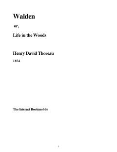

WTabiat qo'ynida yolg'izlikda yashash va ma'naviy erkinlik haqidagi falsafiy asar.
Ushbu asar muallifning Walden ko'li bo'yida ikki yil davomida yolg'izlikda, tabiat qo'ynida o'tkazgan hayoti va kuzatuvlari haqidagi falsafiy kundalikdir. Kitob oddiy hayot kechirish, o'z-o'ziga ishonch va jamiyatdan xoli holda ma'naviy barkamollikka erishish g'oyalarini ilgari suradi.